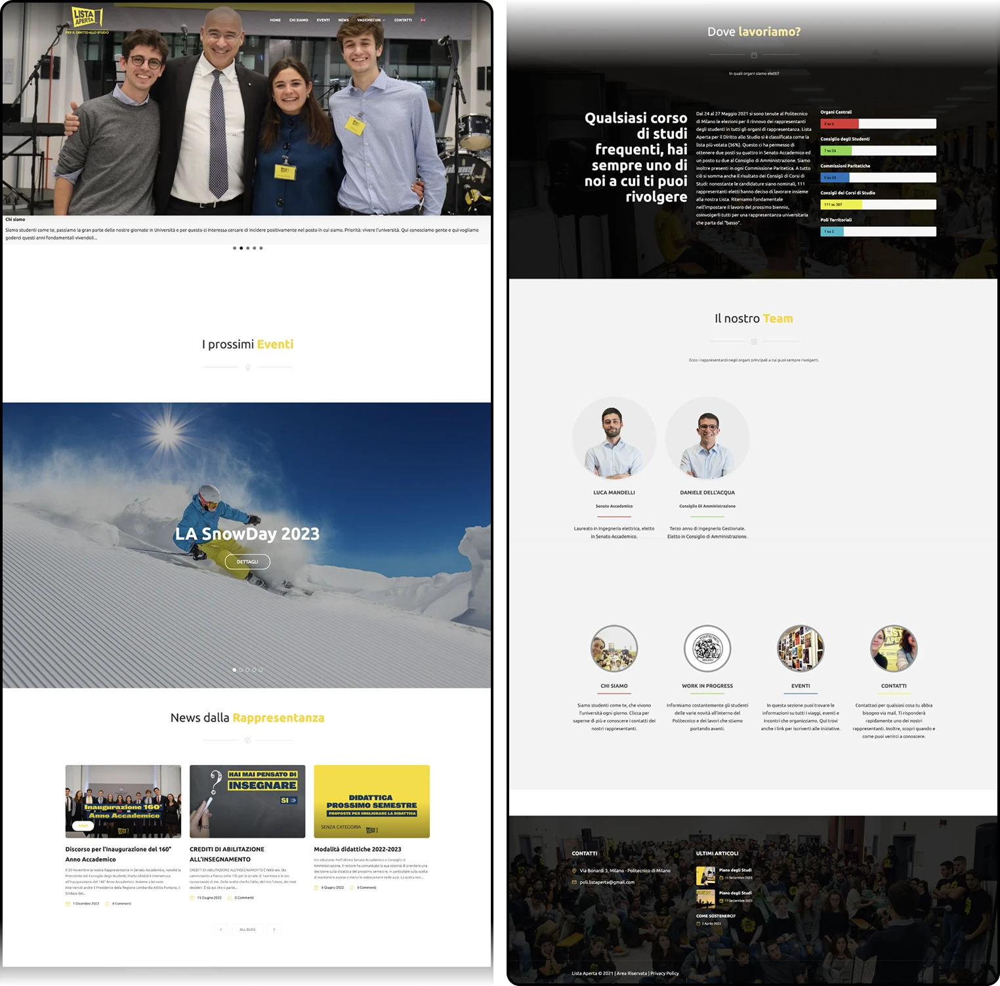
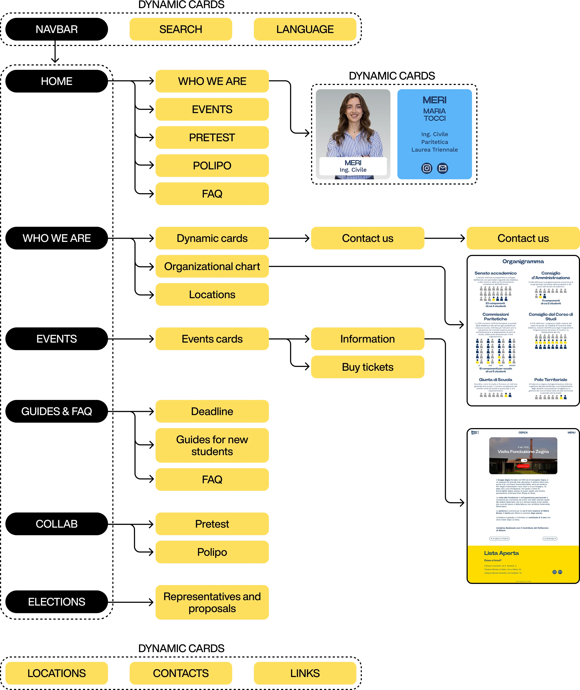
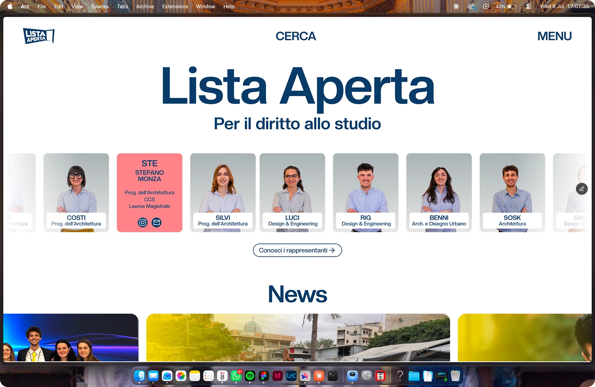

[1] Introduction
Lista Aperta (LA) is a student list from the Politecnico di Milano advocating for the right to study. The website is a practical resource for its members: events, guides for freshmen, elections, contacts of representatives, information regularly consulted by many people.
Developed by a team of 4. My role: design researcher, interaction design, prototyping.
[2] The problem
The old website was on WordPress, manageable only by those with specific technical skills. A serious bottleneck: the site requires weekly updates (events, news, representatives' cards), but only one or two people in the list could intervene.
The initial analysis revealed a deeper issue than just technical access: the site did not reflect Lista Aperta's core values. It prioritised generic content over people and representatives, and the information architecture did not follow actual user behaviour; key sections like events and representatives' faces, often the first interest of visitors, were hidden or unclear.

[3] Information architecture
The new IA reorganises the site around what users really look for: who represents the list, what events are on, how to participate. The "Who We Are" section links directly to dynamic cards of representatives and the organisational chart; the events section leads straight to useful information (date, place, tickets) without intermediate steps.

[4] The solution
Framer was chosen for a specific reason: it gives future list designers a visual tool similar to Figma, without needing to write code for every change. Anyone taking over the role can update content and layout without depending on those who built the site.

[5] Next step
Framer solved technical access, but introduced two structural problems. Cost: €360/year, of which only €200 is covered by Politecnico funds; the remaining €160 is self-financed through stalls and collections. Dependency: the site lives on an external paid service, and editing it still requires knowing Framer, a tool built for designers, not for a representative who just needs to publish an event.
The next step, approved by Lista Aperta's council and already planned, is a custom-built site with an admin panel designed for representatives: log in, create and edit events in a few clicks, no visual editor, no code. Costs drop to domain and hosting (about €30/year), and updates no longer require any technical skills: any representative can do them.
The shift: from "a site that's easier to edit" to "a site that almost no one needs to edit".
[1] Introduction
Student list at Politecnico di Milano fighting for the right to study. Website = practical resource for members: events, freshman guides, elections, representatives' contacts, checked regularly by many.
Team of 4. My role: design researcher, interaction design, prototyping.
[2] The problem
Old site on WordPress → only people with technical skills could manage it. Bottleneck: weekly updates needed, only 1–2 people able.
Deeper issue: site didn't reflect LA's values → generic content over people, IA not following real behaviour; events and representatives' faces (visitors' first interest) hidden or unclear.
[3] Information architecture
New IA built on what users look for: who represents the list, what's on, how to join. "Who We Are" → dynamic representatives' cards + org chart. Events → date, place, tickets, no intermediate steps.
[4] The solution
Why Framer: visual tool like Figma for future list designers, no code per change → whoever takes over updates content and layout without depending on the builders.
[5] Next step
Framer fixed access, created 2 problems. Cost: €360/yr, only €200 covered by Politecnico, €160 self-funded (stalls, collections). Dependency: external paid service, editing still needs Framer, a designer's tool, not a representative's.
Next (approved by the council, planned): custom site + admin panel for representatives → log in, create/edit events in a few clicks, no editor, no code. Costs → domain + hosting (~€30/yr).
Shift: "a site easier to edit" → "a site almost no one needs to edit".